Обзор клуба
Показатели за период, ученики в зоне риска и тренировки на сегодня.
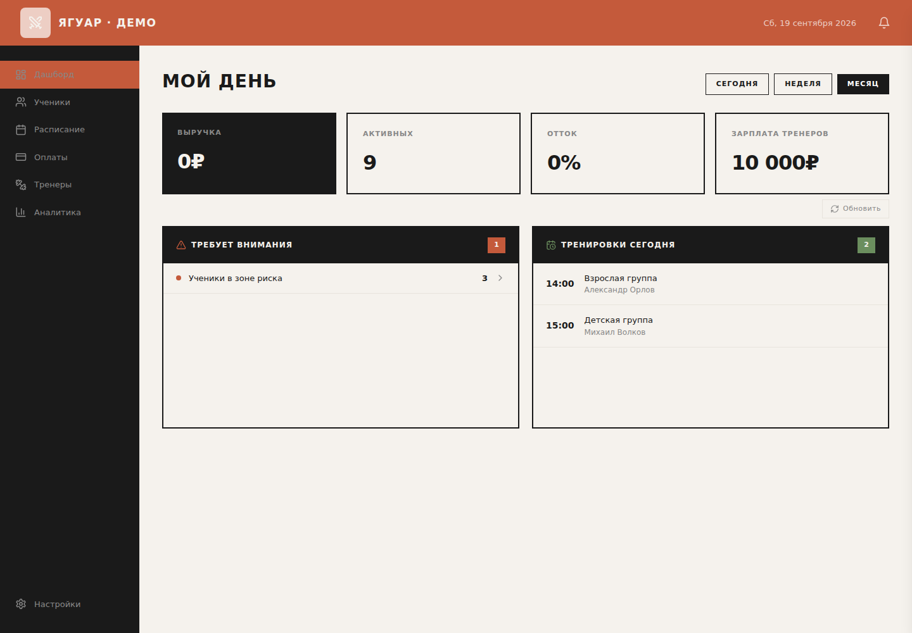
Скачать PNGПроект · CRM «ЯГУАР»
Админка для управления клубом, мобильная PWA для тренера, ученика и родителя, планшетный киоск для отметки посещений.
Нажмите на изображение, чтобы открыть оригинал. Для просмотра ничего устанавливать не нужно.
Показатели за период, ученики в зоне риска и тренировки на сегодня.

Скачать PNGСписок учеников, статусы, поиск и переход к карточке.
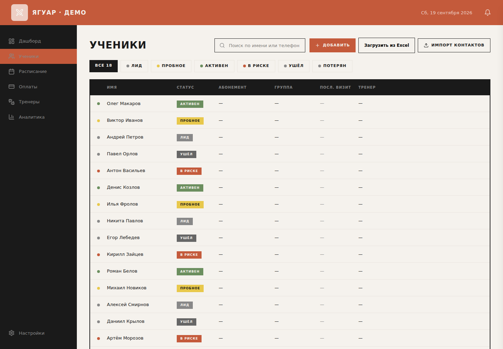
Скачать PNGЗанятия по дням недели, тренеры и залы.
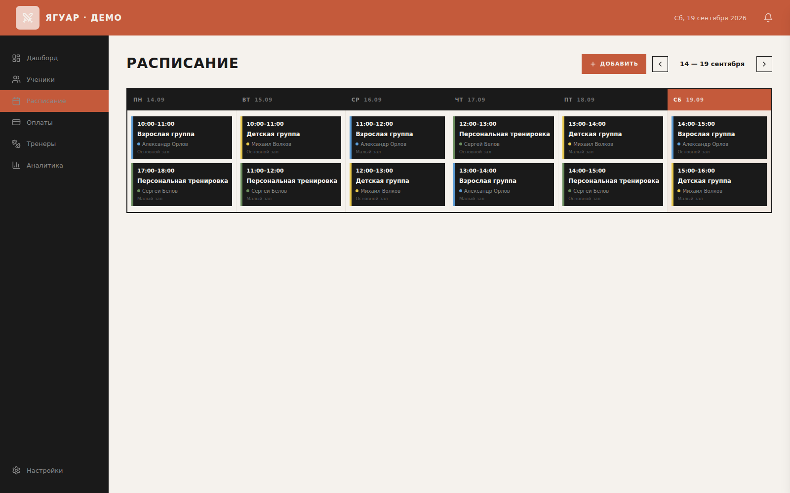
Скачать PNGОстаток занятий, срок действия и состояние абонемента.
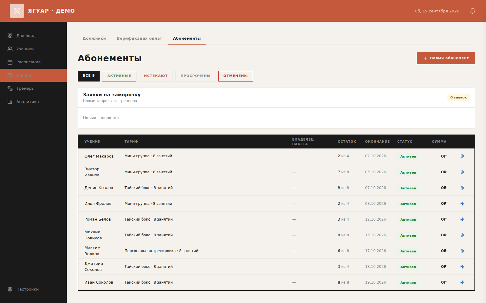
Скачать PNGДанные ученика и связанные рабочие действия.
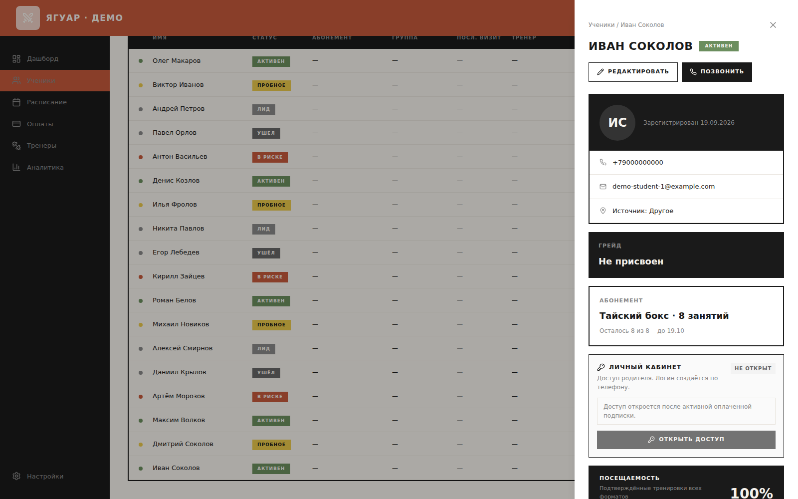
Скачать PNGБлижайшее занятие, задачи, расчётный заработок и ученики.
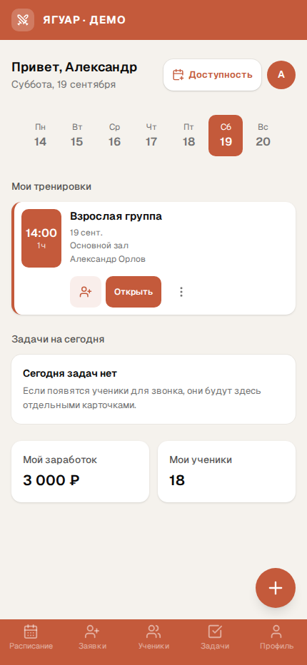
Скачать PNGРабота со списком закреплённых учеников.
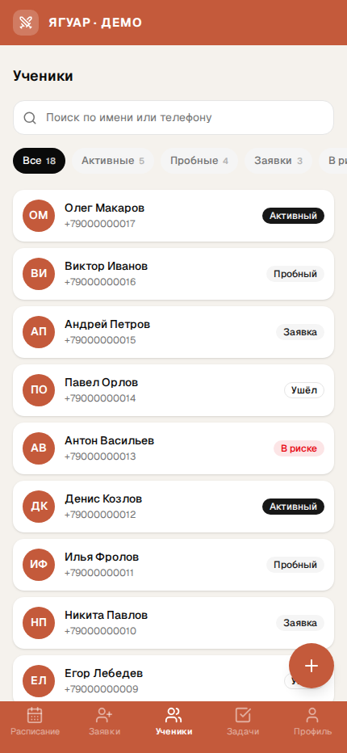
Скачать PNGПрогресс и быстрый переход к расписанию и посещениям.
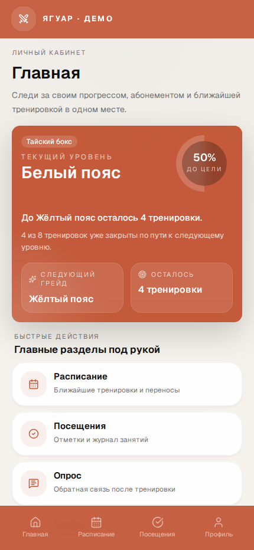
Скачать PNGПросмотр доступных занятий.
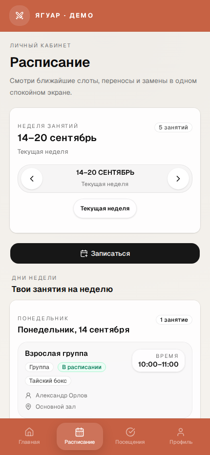
Скачать PNGДоступ к профилю ребёнка и основным разделам.
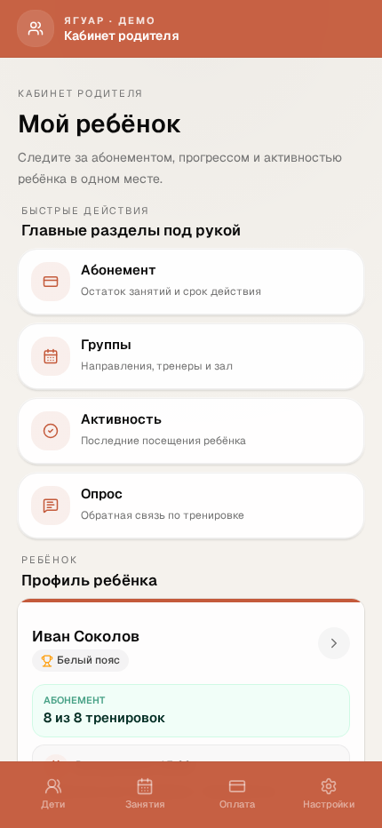
Скачать PNGАбонемент ребёнка, остаток занятий и срок действия.
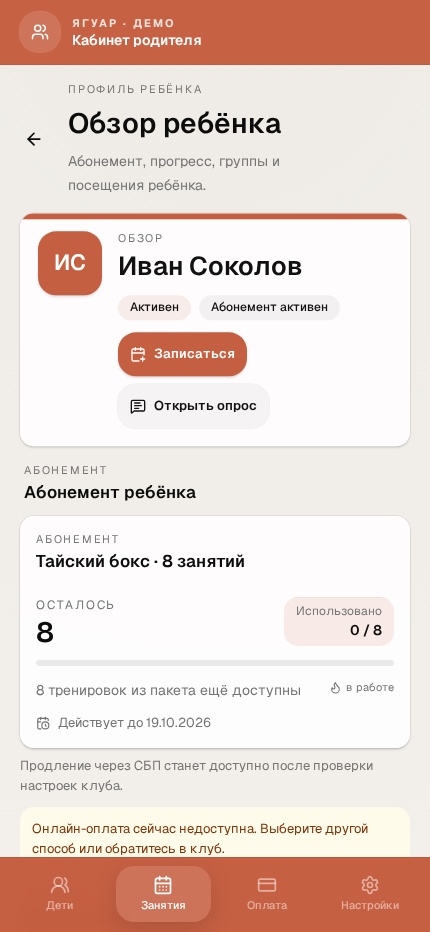
Скачать PNGПланшетный экран: поиск ученика по последним четырём цифрам телефона.
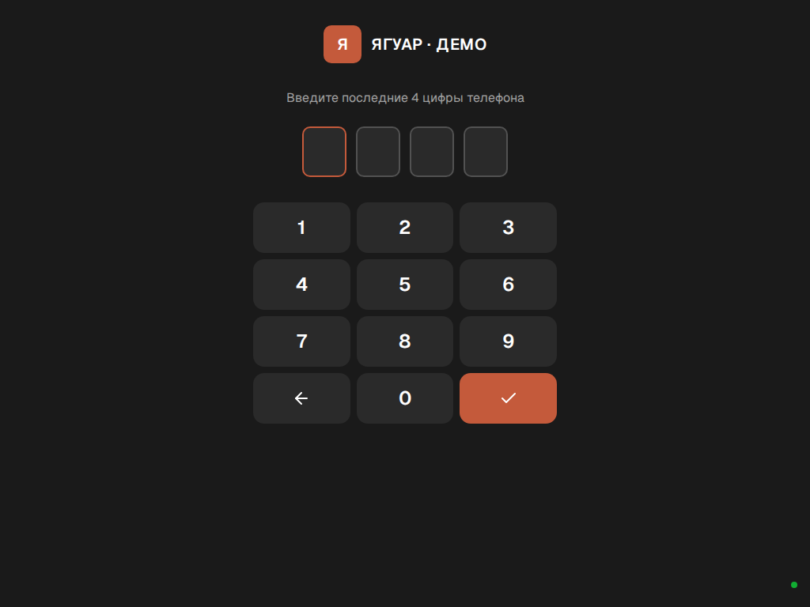
Скачать PNG{kind=link}
{kind=link}
{kind=link}
{kind=link}
{kind=link}
{kind=link}
{kind=link}
{kind=link}
{kind=link}
{kind=link}
{kind=link}
{kind=link}